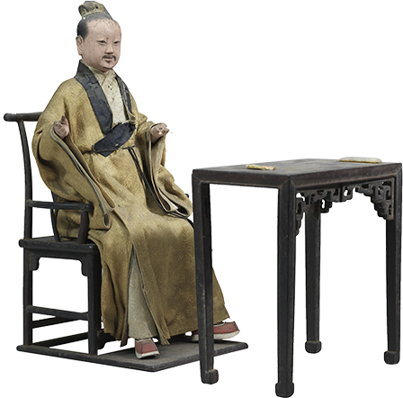
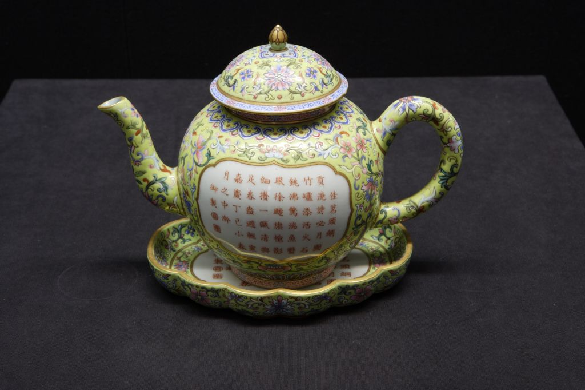

发布者：故宫博物院发布日期：20##-##-##阅读数：876
传说神农时代，中国人已经认识并利用茶，考古证明人工种植茶树的历史超过六千年。自汉代以来，关于茶的认知和制备方法日趋多样，饮茶不仅发展为日常必需和生活时尚，也成为中国哲学“和合”思想的表现。一千多年来，茶从中国走向世界，融入各国人民的生活，不同的文化因素也丰富了中国茶文化的内容。以茶为媒，交融互鉴，茶是承载历史和文化的“中国名片”。
本展览汇集国内外30余家考古文博单位的藏品，以展示茶文化数千年来发展、普及的历程，及其所蕴涵的天人合一、世界大同的哲学追求。茶出中国，源远流长。在浙江发现了已知最早的人工种植茶树根，距今约6000年。山东战国墓葬出土了经过煮（泡）的茶叶遗存，是最古老的饮茶实物证据，距今约2400年。数千年间，种茶技术不断提升，备茶方法也几度变化。历经传承与创新，茶从最初的药用、食用，发展到流行于今的大众饮品，始终在国家政治、经济和文化交流活动中扮演着重要角色。
茶道千载，以和为尚。中国人将对人生、家国、自然、宇宙的思考和生活实践相结合，构成茶文化的精神内核。茶与器的讲究，备茶方法的选择，品茗环境的营造，无不贯穿着中国哲学“和合”思想。茶，深深融入了中国人的生活，成为传承中华文化的重要载体。茶和天下，美美与共。从茶叶产区到无茶之地，茶始终是丝绸之路、茶马古道上流通的重要物资之一。从邻邦到远洋，茶文化在不同时代、不同地域、不同族群中交流互鉴，使世界文明更加丰富多彩。茶文化是中华优秀传统文化的内容之一，为多样的世界文明增添了独特色彩。历经千年发展，茶伴随着文化交流、科技进步，正以更加丰富多样的形式活跃于世界人民的生活中。茶文化从传统中走来，滋养当代，也必将绽放于未来。
